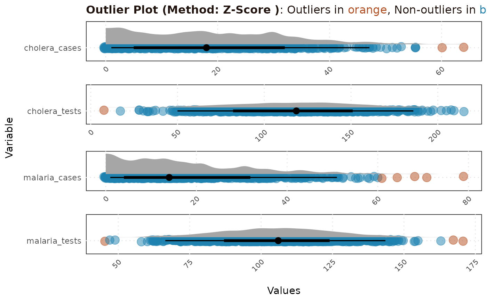

This function identifies and handles outliers in a given dataset using various methods including Z-Score, Modified Z-Score, and Inter-Quartile Range (IQR). It also provides options to treat the identified outliers, using mean, median, rolling mean by group and inter-quartile range. It also has the option to generate a summary report and a plot.
Usage
handle_outliers(
data,
vars = NULL,
method = NULL,
zscore_threshold = 3,
mod_zscore_threshold = 3.5,
iqr_k_value = 1.5,
treat_method = "none",
grouping_vars = NULL,
report_mode = FALSE
)Arguments
- data
Dataframe containing the variables to be checked for outliers.
- vars
Character vector of variable names to check for outliers. Default is NULL, which selects all numeric columns.
- method
Character indicating the method for outlier detection. Options are "zscore", "mod_zscore", and "iqr_method". Default is NULL, which applies all methods.
- zscore_threshold
Numeric value for Z-Score threshold. Default is 3.
- mod_zscore_threshold
Numeric value for Modified Z-Score threshold. Default is 3.5.
- iqr_k_value
Numeric value for IQR multiplier. Default is 1.5.
- treat_method
Character indicating how to treat outliers. Options are "none", "remove", "mean", "median", "grouped_mean", and "quantile". Default is "none".
- grouping_vars
Character vector of grouping variables for "grouped_mean". Required only if treat_method is "grouped_mean".
- report_mode
Logical, if TRUE, the function returns a summary report and a plot. Default is FALSE.
Value
If report_mode is TRUE, a list containing a summary dataframe and a ggplot object. Otherwise, a dataframe with outliers treated according to treat_method.
Examples
# get path
path <- system.file(
"extdata",
"fake_epi_df_togo.rds",
package = "epiCleanr")
fake_epi_df_togo <- import(path)
variables <- c("malaria_tests", "malaria_cases",
"cholera_tests", "cholera_cases")
result <- handle_outliers(fake_epi_df_togo, vars = variables,
method = "zscore", report_mode = TRUE)
print(result$report)
#> # A tibble: 4 × 4
#> variable test outliers prop_outliers
#> <chr> <chr> <glue> <chr>
#> 1 malaria_tests Z-Score 3/900 <1%
#> 2 malaria_cases Z-Score 5/900 <1%
#> 3 cholera_tests Z-Score 1/900 <1%
#> 4 cholera_cases Z-Score 2/900 <1%
print(result$plot)
